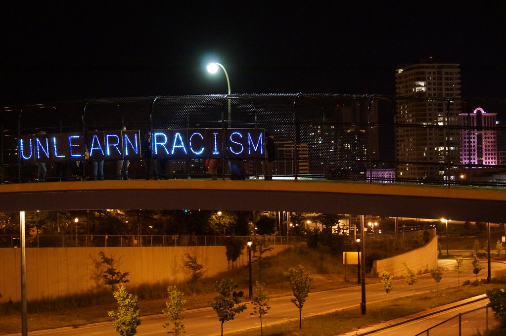
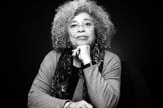

My Journey to Unlearning Racism
where do we go from here?

Contemplations
Conversations
Education
Actions
Contemplations
What is my role in all of this?
What parts of me are conditioned to be racist?
Which parts of my life can I work on unlearning racism and doing the work to lift people up?
How can my meditations bring a new awareness to this situation?
Conversations
Talk to friends and family about their thoughts and action plans
Talk to people within my own social groups about how we can do better (climbing club)
Make it okay to talk about at work
Education
READ! Books recommendations to get through:
WATCH! Important films:
The Black Panthers: Vanguard of the Revolution
Actions

Uniting with the community through protests/rallies/sit-ins
Sign petitions
Spread important stories and news to those who are trying to tune in
Practice compassion to those friends directly effected by this movement and unjustices